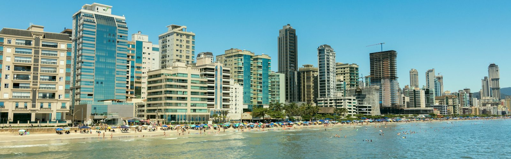

O alargamento da faixa de areia tem licença ambiental na mão e previsão de começar neste mês de agosto. São 4,75 quilômetros de orla e um prazo apertado: precisa acabar antes do verão.
Vacina nas UBS até 1º de setembro, Botão do Pânico integrado à Guarda Municipal e o Avança Itapema seguindo nos bairros. Os comunicados oficiais da semana.
Fonte · Prefeitura de ItapemaItapema · Legislativo
O Projeto de Lei 188/2026 autoriza a Prefeitura a buscar o financiamento junto à Caixa. O dinheiro deve ir para mobilidade, saúde, educação e urbanização, e o Executivo justifica o valor pelo ritmo de crescimento da cidade.
Fonte · Câmara de Vereadores de Itapema e Visor NotíciasEconomia
O Índice FipeZAP coloca a cidade em R$ 15.073 o metro quadrado, atrás só de Balneário Camboriú, com R$ 15.146. Vitória aparece em terceiro. Duas cidades vizinhas do litoral catarinense ocupam o topo da lista nacional.
Drenagem, contenção, padronização de calçadas e preparação de vias para pavimentação. No Ilhota, a Prefeitura executa contenção com estacas na margem do rio Mata de Camboriú, perto da BR-101, para conter erosão.
Fonte · Secretaria de Obras e Serviços Públicos de ItapemaServiço
A Prefeitura convoca a população para discutir a LDO e a LOA de 2027, às 18h30, no auditório nos fundos do prédio da Prefeitura. É onde se decide, na prática, para onde vai o dinheiro da cidade no ano que vem.
Fonte · Diário Oficial dos Municípios de Santa CatarinaRegião
Empreendimentos de alto padrão avançam sobre a cidade que sempre foi caminho para Bombinhas. A gestão local quer transformar Porto Belo em destino, e não em passagem. A arrecadação municipal cresceu forte na última década.
Fonte · Prefeitura de Porto Belo, Gazeta do Povo e O Antagonista
São 8,6 mortes violentas por 100 mil habitantes, contra média nacional de 23. E o catarinense vive, em média, 81,1 anos, a maior marca do país. Brusque, Jaraguá do Sul e Tubarão lideram o ranking de segurança.
Fonte · IBGE e Anuário Cidades Mais Seguras do BrasilSanta Catarina · Turismo
Três frentes de mobilidade avançam ao mesmo tempo: a rodovia paralela à BR-101, a rota entre Camboriú e Itapema e uma ponte ligando Porto Belo a Itapema.
Fonte · Governo de SC e DNITBombinhas · Meio ambiente
Mergulho dentro da reserva é proibido por lei. O que existe é uma exceção em área que fica fora dos limites dela.
Fonte · ICMBio e Prefeitura de Bombinhas

A orla que pauta este jornal. Entre a areia cheia e os guindastes ao fundo está a maior parte do que a gente cobre por aqui.
Imagem ilustrativa · Leandro Bezerra/Pexels
Últimas notícias
Tudo o que publicamos, da mais nova para a mais antiga
PublieditorialConteúdo patrocinado, sempre identificado
Espaço comercial separado da cobertura editorial, conforme nossa política
Da nossa redação
Como este jornal funciona
Manifesto
Por que criamos um jornal que não quer dar furo
Enquanto todo mundo corre atrás do exclusivo, a gente resolveu correr atrás de outra coisa: contar melhor o que já está na boca do povo. A lógica por trás dessa escolha.
Resumo de 30 segundos, matéria completa e três colunistas com opiniões diferentes sobre o mesmo fato. Como funciona o Modo de Leitura e por que ele existe.
Acusação sem documento, tragédia virando espetáculo, publicidade fingindo ser notícia. A lista das nossas linhas vermelhas está aberta para qualquer leitor conferir.
 Itapema · Poder público
Itapema · Poder público